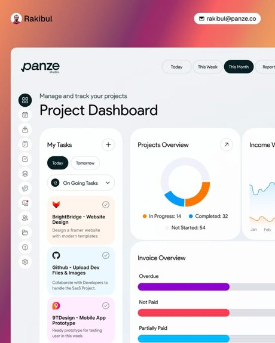
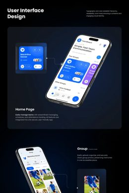
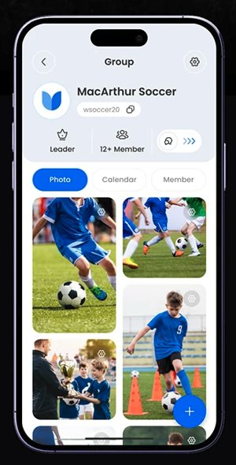
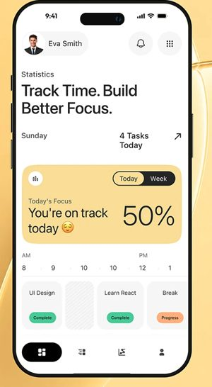
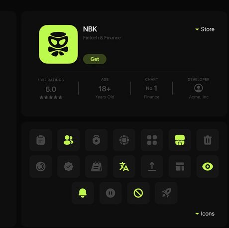

Tres caminos para que se sienta como una app de club: familiar, con onda y distinta. Las tres muestran la misma pantalla con los mismos datos (la Agenda de una familia), para compararlas de verdad. Nada de esto es definitivo: sirve para elegir y mezclar.

Tablero de proyectos. Tarjetas de color suave según el tipo, botones en píldora y el activo en tinta casi negra. Título grande y liviano.

App de equipos. Azul eléctrico con un apoyo violeta. La fecha es un número enorme dentro de su tarjeta.

Fotos del grupo. Pestañas en píldora, fotos con esquinas muy redondeadas y un botón + flotante.

Foco del día. Fondo cálido, numerales gigantes y un menú inferior con píldora negra para lo activo.

Set de íconos. Gruesos, redondeados, en baldosas. El activo se enciende en lima: ahí está la personalidad.
Los íconos de arriba son ilustrativos: una geometría base dibujada de tres maneras. El pack final se dibuja a mano, con una sola geometría y ~40 íconos.
@theme (Tailwind 4, que ya usamos en Portal).currentColor y dos variables: --ic-stroke y --ic-fill. Cambiar de dirección es cambiar variables.--club); tintes y estados se derivan de ella con color-mix.data-theme), no un invertido.A como base (es la más familiar y la más tuya), con el color del club de C reemplazando al sol en lo activo, y B como modo oscuro más adelante.
Una plataforma con muchos clubes necesita que cada club ponga su color sin romper la identidad. La identidad queda en la costura, las horas gigantes, los íconos y los stickers; el color es del club.
En la cancha, a pleno sol, un fondo oscuro se lee peor. Por eso B no debería ser la versión por defecto, y los contrastes se verifican siempre al 4,5 a 1.